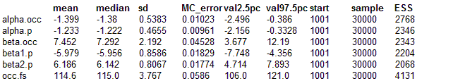

Gentians: accounting for imperfect detection in site-occupancy models for species distribution
(Contributed by Marc Kerry)
Modelling species distributions is important in both basic and applied ecology (e.g., Scott
et al., 2002, Island Press). Typically, logistic regression-types of models (GLM) with perhaps added smooth terms (GAMs) are used to model detection/non-detection data by a set of explanatory variables. However, most organisms are not always found at all the sites they actually occur. Hence, virtually always people don't model actual distributions, i.e., probability of occurrence
per se, but rather the product of the probability of occurrence and the probability of detection, given occurrence. Imperfect detection means that true distribution is underestimated and that factors that affect detection rather than occurrence may end up in predictive models of occurrence.
To model distributions free from the biasing effects of detection, MacKenzie
et al. (Ecology, 2002, 2003; 2006; Academic Press) developed site-occupancy models, a sort of coupled logistic regression models where one submodel describes actual occurrence and the other detection given occurrence. Royle and Kery (Ecology, 2007) presented a hierarchical formulation of these models that may easily be fitted using BUGS. Site-occupancy models may be applied whenever information about the detection process separate from that on occurrence is available. For this, replicate detection/nondetection observations are required for at least some of the studied sites during a short time period when the population can be assumed closed, i.e., when occupancy status can be assumed to be constant. (For the dynamic, multi-season version of these models, essentially a generalised metapopulation model; see MacKenzie
et al. 2003, 2006; Royle and Kery 2007).
The single-season site-occupancy model can be succinctly written as a state-space model in two linked equations:
z
i ~ Bernoulli(
ψi) State equation
y
ij ~ Bernoulli( z
i * p
ij) Observation equation
The first line describes the true biological process: true occurrence, the latent state z
i, at site
i is a Bernoulli random variable governed by the parameter
ψi, which is occurrence probability or occupancy. The second line describes the actual observation of the study species y
ij, that is, detection or nondetection at site
i during survey
j. This is another Bernoulli random variable governed by a parameter that is the product of actual occurrence at that site, z
i, and detection probability p
ij at site
i during survey
j. Both Bernoulli parameters, occurrence
ψi and detection p
ij, can be expressed as linear or other functions of covariates via a logit link. Note that covariates for occurrence will be constant over replicated surveys, while those for detection may be either constant or variable (survey-specific). Technically, the site-occupancy model can be described as a non-standard generalized linear mixed model with a random effect that follows a Bernoulli rather than normal distribution.
This example site-occupancy analysis is based on simulated data where presence or absence of a rare plant, the gentian
Gentianella germanica, was inventoried at 150 grassland sites using three independent surveys at each site. The aim was to estimate prevalence of the gentian and quantify the (positive) relationship between occurrence and site wetness (continuous 0 to 1). Detection probability was assumed to be lower at wetter sites because of greater vegetation height, leading to the absence of an observed occurrence-wetness relationship in a naive analysis using simple logistic regression. This site-occupancy example fits the wetness covariate into both the mean of occurrence probability and into the mean of detection probability. In addition, the example features use of a survey-specific covariate, observer experience (rated continuous 0 to 1).
Notes: A good choice of starting values can be essential for successfully fitting the model. In particular, it ia a good idea to use the observed occupancy state of each site as starting value for the latent state is a good idea. The model can be fitted with missing y values, but there should not be missing values in the explanatory variables (unless they are modelled). For very imbalanced data sets, it is more efficient to fit the model to a "vertical data format"; see example for Binomial mixture model.
model
{
# Priors
alpha.occ ~ dunif(-20, 20)
beta.occ ~ dunif(-20, 20)
alpha.p ~ dunif(-20, 20)
beta1.p ~ dunif(-20, 20)
beta2.p ~ dunif(-20, 20)
# Likelihood
for (i in 1:R) {
# Model for partially latent state
z[i] ~ dbern(psi[i]) # True occupancy z at site i
logit(psi[i]) <- alpha.occ + beta.occ * wetness[i]
for (j in 1:T) {
# Observation model for actual observations
y[i, j] ~ dbern(eff.p[i, j]) # Det.-nondet. at i and j
eff.p[i, j] <- z[i] * p[i, j]
logit(p[i, j]) <- alpha.p + beta1.p * wetness [i] + beta2.p * experience[i, j]
}
}
# Derived quantity
occ.fs <- sum(z[ ]) # Finite sample number of occupied sites
}
Data
list(y= structure(.Data= c(0, 0, 0, 0, 0, 0, 1, 1, 0, 0, 1, 1, 0, 0, 0, 1, 1, 0, 1, 0, 0, 0, 0, 0, 0, 1, 0, 0, 0, 0, 0, 0, 1, 1, 0, 0, 0, 0, 0, 0, 0, 0, 0, 0, 0, 0, 0, 0, 0, 0, 1, 0, 0, 1, 0, 0, 0, 0, 0, 0, 0, 0, 0, 0, 1, 1, 1, 1, 1, 0, 0, 0, 0, 0, 0, 0, 1, 0, 0, 1, 1, 0, 0, 0, 0, 0, 0, 0, 0, 0, 0, 0, 0, 0, 0, 0, 0, 0, 0, 0, 0, 0, 1, 0, 0, 0, 0, 0, 0, 0, 0, 0, 0, 0, 1, 0, 0, 1, 0, 0, 1, 0, 0, 0, 0, 0, 1, 0, 1, 0, 0, 0, 1, 0, 1, 0, 0, 0, 1, 1, 1, 1, 0, 0, 0, 0, 0, 0, 0, 0, 1, 1, 0, 0, 1, 1, 0, 0, 0, 0, 0, 0, 1, 0, 0, 1, 0, 1, 0, 0, 0, 1, 0, 1, 0, 0, 0, 0, 1, 0, 0, 0, 0, 0, 1, 0, 0, 0, 1, 0, 1, 1, 0, 0, 0, 0, 0, 0, 1, 0, 0, 0, 0, 1, 0, 0, 0, 0, 0, 0, 1, 1, 1, 0, 0, 0, 1, 1, 0, 0, 0, 0, 0, 0, 0, 0, 0, 0, 0, 0, 0, 0, 0, 0, 0, 0, 0, 0, 0, 0, 0, 0, 0, 0, 0, 1, 0, 0, 0, 0, 0, 0, 0, 0, 0, 0, 0, 0, 1, 0, 1, 1, 1, 0, 0, 1, 0, 0, 0, 0, 1, 0, 0, 0, 0, 0, 1, 1, 0, 0, 0, 1, 0, 0, 0, 0, 0, 0, 0, 1, 0, 1, 0, 0, 0, 0, 0, 1, 0, 0, 0, 0, 0, 0, 0, 0, 0, 0, 0, 0, 0, 0, 0, 0, 0, 0, 1, 0, 1, 0, 0, 0, 1, 0, 0, 1, 0, 0, 0, 0, 0, 0, 1, 0, 0, 0, 0, 1, 0, 0, 0, 0, 0, 0, 0, 0, 1, 1, 0, 1, 0, 1, 0, 1, 0, 0, 0, 0, 0, 0, 0, 0, 0, 1, 1, 0, 0, 0, 0, 0, 0, 0, 1, 0, 1, 0, 0, 0, 1, 1, 0, 0, 0, 0, 0, 0, 0, 0, 0, 0, 1, 0, 0, 1, 1, 1, 1, 0, 0, 0, 0, 0, 0, 0, 0, 0, 0, 0, 0, 0, 0, 0, 0, 0, 0, 1, 0, 0, 0, 0, 0, 0, 0, 0, 0, 0, 0, 1, 0, 0, 0, 0, 0, 1, 0, 0, 0, 0, 1, 0, 1, 1, 1, 0, 0, 0, 0, 0, 0, 1), .Dim=c(150, 3)), wetness=c(0.6055, 0.7581, 0.6262, 0.2999, 0.6707, 0.2169, 0.5311, 0.9971, 0.8829, 0.1200, 0.4439, 0.8868, 0.5487, 0.0371, 0.9884, 0.7670, 0.7979, 0.5120, 0.3610, 0.8794, 0.5932, 0.1797, 0.3990, 0.9888, 0.9428, 0.9785, 0.3738, 0.6347, 0.8558, 0.8355, 0.3196, 0.7387, 0.1733, 0.9594, 0.2854, 0.1543, 0.6478, 0.8788, 0.2080, 0.0822, 0.4533, 0.5656, 0.2780, 0.1188, 0.0534, 0.8297, 0.3384, 0.2939, 0.9051, 0.7126, 0.1014, 0.1897, 0.3693, 0.2159, 0.6069, 0.0682, 0.1567, 0.3502, 0.8128, 0.3182, 0.8826, 0.6533, 0.7350, 0.4662, 0.8113, 0.0805, 0.7662, 0.7356, 0.0938, 0.2881, 0.0178, 0.6942, 0.3457, 0.0167, 0.5085, 0.7425, 0.1153, 0.3446, 0.0021, 0.3126, 0.5467, 0.3746, 0.8996, 0.0794, 0.9408, 0.3166, 0.0736, 0.0991, 0.7981, 0.7108, 0.5711, 0.1967, 0.4142, 0.0299, 0.7353, 0.2038, 0.6513, 0.7736, 0.8934, 0.7312, 0.8417, 0.9141, 0.0522, 0.0963, 0.7979, 0.8071, 0.9027, 0.6871, 0.3479, 0.5847, 0.8997, 0.3164, 0.4939, 0.1962, 0.0665, 0.4859, 0.8429, 0.3606, 0.1270, 0.9562, 0.2324, 0.4261, 0.6230, 0.9178, 0.3441, 0.0743, 0.4770, 0.7466, 0.7212, 0.7690, 0.5158, 0.4282, 0.5591, 0.6982, 0.1137, 0.1277, 0.0153, 0.1206, 0.6919, 0.3204, 0.5022, 0.8659, 0.4953, 0.3191, 0.3909, 0.1670, 0.1226, 0.4264, 0.6854, 0.8465), experience= structure(.Data= c(0.2629,0.7681,0.4632,0.0347,0.6942,0.3793,0.8257,0.9184,0.0291,0.0851,0.8664,0.6729,0.2141,0.8182,0.5112,0.7231,0.9994,0.2593,0.8889,0.0271,0.6617,0.7134,0.6322,0.9110,0.0120,0.7125,0.5071,0.0933,0.0230,0.2648,0.8506,0.2678,0.8157,0.9997,0.0773,0.3399,0.1228,0.5444,0.4311,0.8257,0.4885,0.8093,0.0001,0.8778,0.0001,0.1741,0.0709,0.3400,0.2406,0.2971,0.9526,0.1001,0.5464,0.0894,0.6025,0.0276,0.9064,0.3880,0.5732,0.3806,0.7190,0.1789,0.1442,0.4873,0.8045,0.2417,0.8119,0.8185,0.7720,0.6787,0.5158,0.5382,0.8638,0.5059,0.3876,0.0354,0.9578,0.6783,0.0319,0.4747,0.9542,0.3844,0.0079,0.5857,0.1346,0.2485,0.2870,0.1538,0.0010,0.1861,0.0347,0.2228,0.1196,0.3966,0.2915,0.7952,0.4074,0.1231,0.1007,0.5826,0.0764,0.3042,0.1891,0.4942,0.1045,0.0245,0.1810,0.7308,0.0728,0.9211,0.6812,0.0564,0.7717,0.7595,0.0920,0.1999,0.7267,0.9182,0.0896,0.0339,0.6062,0.3728,0.0664,0.0226,0.0752,0.1412,0.7591,0.4404,0.2357,0.1086,0.2877,0.2253,0.2956,0.6273,0.0738,0.9519,0.8066,0.4466,0.0418,0.9738,0.8396,0.9725,0.6497,0.3693,0.6813,0.3983,0.0200,0.6009,0.6164,0.6052,0.4636,0.8807,0.1421,0.2116,0.4143,0.3738,0.9617,0.0682,0.1688,0.1538,0.1285,0.8995,0.6934,0.0057,0.1195,0.6095,0.0494,0.5320,0.6330,0.6647,0.6116,0.8232,0.1508,0.9933,0.8368,0.7356,0.2172,0.3455,0.6099,0.3923,0.2825,0.5080,0.5701,0.4404,0.9591,0.4665,0.0793,0.9748,0.9938,0.6867,0.6185,0.3902,0.5138,0.2769,0.2276,0.0708,0.2742,0.4445,0.9312,0.7508,0.1703,0.0753,0.7895,0.9684,0.4555,0.0218,0.4901,0.2017,0.0980,0.5433,0.3669,0.4694,0.7725,0.2769,0.3994,0.1361,0.2416,0.4178,0.5189,0.6667,0.7780,0.1274,0.8801,0.3253,0.0966,0.5767,0.6950,0.4375,0.7114,0.7518,0.0042,0.5760,0.9706,0.0801,0.5861,0.3869,0.2437,0.6306,0.0127,0.8937,0.4739,0.0873,0.5443,0.5312,0.3961,0.8939,0.2280,0.6158,0.5501,0.0417,0.0881,0.3159,0.5368,0.8419,0.3673,0.3185,0.7340,0.5245,0.6264,0.0405,0.4443,0.0149,0.8185,0.4974,0.5145,0.7712,0.6375,0.3086,0.2312,0.3209,0.9835,0.3253,0.3270,0.6154,0.6886,0.9663,0.8905,0.6715,0.5690,0.1281,0.1671,0.8568,0.7297,0.3237,0.4054,0.0577,0.1956,0.2481,0.0294,0.8796,0.5131,0.7339,0.9583,0.9740,0.2746,0.6991,0.7349,0.7633,0.4825,0.5073,0.8835,0.6382,0.2358,0.1891,0.5486,0.4821,0.8166,0.1639,0.3181,0.6165,0.4448,0.0619,0.7530,0.0685,0.4661,0.1248,0.8485,0.7180,0.9784,0.0473,0.6058,0.8190,0.8133,0.3078,0.1029,0.6236,0.0025,0.9028,0.1272,0.6115,0.2060,0.5627,0.8659,0.4462,0.9255,0.5182,0.0365,0.4298,0.4611,0.3363,0.3493,0.4571,0.1674,0.9454,0.4449,0.9368,0.6917,0.6531,0.5986,0.9817,0.2233,0.9457,0.0960,0.3967,0.7945,0.2489,0.5041,0.6837,0.3732,0.9767,0.5621,0.9134,0.5258,0.9786,0.8562,0.1284,0.6784,0.9639,0.6932,0.6508,0.5262,0.6729,0.7072,0.1777,0.7622,0.2905,0.4120,0.2267,0.8588,0.9609,0.3782,0.2367,0.2346,0.5267,0.1183,0.5795,0.4363,0.0275,0.3049,0.1933,0.2466,0.1789,0.1216,0.9184,0.8881,0.7526,0.7371,0.2912,0.4794,0.6268,0.2401,0.5614,0.0362,0.0123,0.7117,0.0390,0.6956,0.5796,0.0945,0.8291,0.6037,0.0919,0.3609,0.1314,0.2872,0.9786,0.0948,0.2236,0.3038,0.4986,0.2842,0.0051,0.3092,0.3716,0.3062,0.1660,0.7654,0.9052,0.4202,0.2462,0.5897,0.1592,0.3862,0.7451,0.4944,0.8984,0.2347,0.6420,0.8763,0.2355,0.4374,0.6729,0.8412,0.3527,0.3810,0.1747,0.1984,0.3921,0.8700,0.4790), .Dim=c(150, 3)), R=150, T=3)
Inits for chain 1
list(z=c(0, 0, 1, 1, 0, 1, 1, 0, 1, 0, 1, 1, 0, 0, 0, 0, 1, 1, 0, 0, 0, 1, 1, 0, 0, 1, 1, 0, 0, 0, 0, 0, 0, 0, 1, 0, 0, 0, 1, 1, 1, 0, 1, 0, 1, 0, 1, 1, 0, 0, 1, 1, 0, 0, 1, 1, 0, 1, 0, 1, 0, 1, 1, 1, 0, 0, 1, 1, 0, 0, 1, 0, 1, 0, 0, 0, 0, 0, 0, 0, 0, 1, 0, 0, 0, 0, 1, 1, 1, 0, 1, 0, 1, 1, 0, 0, 1, 1, 0, 1, 0, 0, 0, 0, 0, 1, 1, 1, 1, 0, 1, 0, 1, 0, 0, 1, 1, 1, 0, 0, 0, 1, 0, 0, 1, 0, 1, 0, 0, 0, 1, 1, 1, 0, 0, 0, 0, 0, 1, 0, 0, 0, 1, 0, 1, 0, 1, 1, 0, 1), alpha.occ=-3.28, beta.occ=-3.55, alpha.p=3.99, beta1.p=-2.2, beta2.p=-2.79)
Inits for chain 2
list(z=c(0, 0, 1, 1, 0, 1, 1, 0, 1, 0, 1, 1, 0, 0, 0, 0, 1, 1, 0, 0, 0, 1, 1, 0, 0, 1, 1, 0, 0, 0, 0, 0, 0, 0, 1, 0, 0, 0, 1, 1, 1, 0, 1, 0, 1, 0, 1, 1, 0, 0, 1, 1, 0, 0, 1, 1, 0, 1, 0, 1, 0, 1, 1, 1, 0, 0, 1, 1, 0, 0, 1, 0, 1, 0, 0, 0, 0, 0, 0, 0, 0, 1, 0, 0, 0, 0, 1, 1, 1, 0, 1, 0, 1, 1, 0, 0, 1, 1, 0, 1, 0, 0, 0, 0, 0, 1, 1, 1, 1, 0, 1, 0, 1, 0, 0, 1, 1, 1, 0, 0, 0, 1, 0, 0, 1, 0, 1, 0, 0, 0, 1, 1, 1, 0, 0, 0, 0, 0, 1, 0, 0, 0, 1, 0, 1, 0, 1, 1, 0, 1), alpha.occ=9.82, beta.occ=2.44, alpha.p=-2.80, beta1.p=-3.68, beta2.p=-4.93)
Inits for chain 3
list(z=c(0, 0, 1, 1, 0, 1, 1, 0, 1, 0, 1, 1, 0, 0, 0, 0, 1, 1, 0, 0, 0, 1, 1, 0, 0, 1, 1, 0, 0, 0, 0, 0, 0, 0, 1, 0, 0, 0, 1, 1, 1, 0, 1, 0, 1, 0, 1, 1, 0, 0, 1, 1, 0, 0, 1, 1, 0, 1, 0, 1, 0, 1, 1, 1, 0, 0, 1, 1, 0, 0, 1, 0, 1, 0, 0, 0, 0, 0, 0, 0, 0, 1, 0, 0, 0, 0, 1, 1, 1, 0, 1, 0, 1, 1, 0, 0, 1, 1, 0, 1, 0, 0, 0, 0, 0, 1, 1, 1, 1, 0, 1, 0, 1, 0, 0, 1, 1, 1, 0, 0, 0, 1, 0, 0, 1, 0, 1, 0, 0, 0, 1, 1, 1, 0, 0, 0, 0, 0, 1, 0, 0, 0, 1, 0, 1, 0, 1, 1, 0, 1), alpha.occ=3.49, beta.occ=-3.65, alpha.p=3.65, beta1.p=-4.59, beta2.p=-4.83)
Results
Compare this with the "known truth" of the data-generating parameters:
alpha.occ = -1
alpha.p = 1
beta.occ = 5
beta1.p = -5
beta2.p = 5
In this example, the gentian was discovered at only 65 among the 108 sites where it actually occurs. This needs to be compared with the finite-sample occurrence (occ.fs), which is estimated remarkably precisely. To see what may happen in conventional modelling of such data, it is instructive to run a logistic regression of the observed detection/nondetection data on wetness and mean observer experience.
